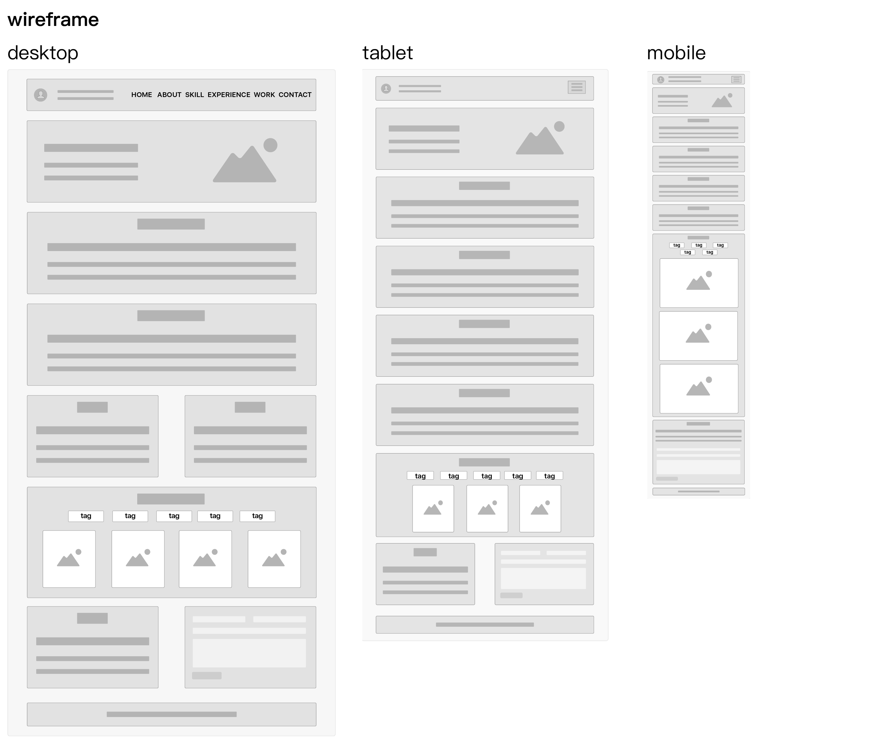
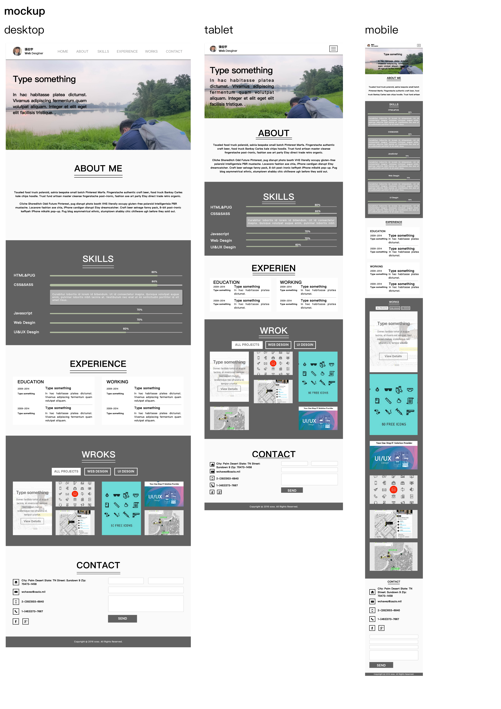

張伯宇
UI/UX Desginer
一般傳統式的官方網站,使用HTML/CSS
以Grid layout的概念做設計,使用HTML/CSS/JavaScript
一個簡潔、便利的時間管理app,可以用於一般行事或是專案管理使用
設計現在最常見的一頁式網站,使用HTML/CSS/JavaScript
以自己作品集的網站為例,從設計到切版的過程紀錄,以Bootstrap為基礎做設計,此網頁為RWD響應式網站
#Web #Blog
#Web #GridLayout
#UI #Time #Prototype
«月份切換»
«週/月切換»
«選單»
«新增事項»
«事項複製»
«事項移動/刪除»
«事項修改»
«新增任務»
#Web #Singlepage
#Web #Singlepage #galley #Bootstrap #RWD
«wireframe»
«mockup»